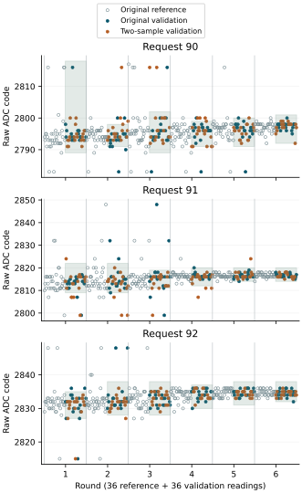
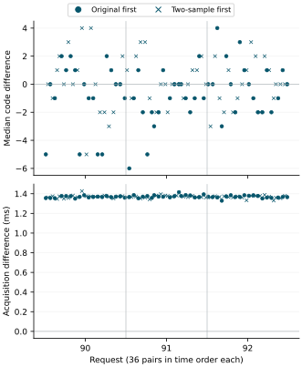

Returned observations
Preparation A56D6F98C422 returned all 3888 acquisitions and 324 complete two-sample traces. Original and second SDA observations agreed in all 10368 bit comparisons. All 1296 original result octets reconstructed from their pin samples matched the acquisition record. SCL was high at both observed instants for every traced bit. This agreement includes all 23 two-sample validation readings outside their local intervals.
Every trace retained valid separation bounds. The recorded per-trace minimum values ranged from 612 to 616 ticks; maxima ranged from 627 to 809 ticks. At the reported 54 MHz counter frequency, the smallest recorded bound is 11.333 microseconds and the largest is 14.981 microseconds. These are lower bounds on separation, not an upper bound on actual separation or a distribution of individual sampling times. All exceed the declared 540-tick minimum.
The diagnostic-completion and sampled-agreement criteria were met. Complete local median retention was not observed. Counts below use the frozen, request-local intervals; they do not measure six-state recognition accuracy.
| Request | Reception | Raw departures | Medians inside |
|---|---|---|---|
| 90 | Original | 9/108 | 36/36 |
| 90 | Two samples | 8/108 | 36/36 |
| 91 | Original | 8/108 | 36/36 |
| 91 | Two samples | 13/108 | 35/36 |
| 92 | Original | 5/108 | 36/36 |
| 92 | Two samples | 2/108 | 36/36 |
Totals were 22/324 raw departures and 108/108 medians inside under original reception, compared with 23/324 and 107/108 under two-sample reception. No readings or medians were unavailable. The added observation did not eliminate excursions, and this boot provides no consistent reduction across requests.
The sole median departure occurred at request 91 in round 1: the triple at zero-based ordinals 549–551 was 2816, 2807, 2807. Its median 2807 lies below the frozen interval 2809–2822. All three traced readings had matching original and second samples; duplicate result-register reads also agreed.
Reference intervals
All eighteen holds supplied twelve valid original-reference medians. Interval widths ranged from 6 to 29 raw codes, retaining every reference extreme. At request 90 in round 1, the median 2816 widened the interval to 2789–2818. A wide interval can retain exceptional values; retention alone therefore does not establish reliable state separation.

All frozen intervals
| Round | Request | Interval | Width |
|---|---|---|---|
| 1 | 90 | 2789–2818 | 29 |
| 1 | 91 | 2809–2822 | 13 |
| 1 | 92 | 2827–2835 | 8 |
| 2 | 91 | 2809–2822 | 13 |
| 2 | 92 | 2828–2838 | 10 |
| 2 | 90 | 2791–2798 | 7 |
| 3 | 92 | 2828–2838 | 10 |
| 3 | 90 | 2789–2802 | 13 |
| 3 | 91 | 2811–2819 | 8 |
| 4 | 90 | 2791–2799 | 8 |
| 4 | 92 | 2830–2837 | 7 |
| 4 | 91 | 2812–2820 | 8 |
| 5 | 91 | 2814–2820 | 6 |
| 5 | 90 | 2791–2800 | 9 |
| 5 | 92 | 2831–2838 | 7 |
| 6 | 92 | 2832–2838 | 6 |
| 6 | 91 | 2814–2820 | 6 |
| 6 | 90 | 2792–2801 | 9 |
Paired reception effects
All 108 adjacent pairs had a positive two-sample minus original acquisition-duration difference. The median difference was +1.369306 ms, with a range of +1.329463 to +1.427111 ms. These differences compare the medians of three acquisition brackets; they include the surrounding acquisition sequence, not just GPIO sampling. The second observation and added work are associated with longer acquisition in this boot.
Median code differences were zero at each request. Separating condition order gave zero for both orders at 90 and 92; at 91, original-first pairs had median −1 and two-sample-first pairs had median 0. Each request contributed 18 pairs of each order. The observations do not establish a common code shift or a repeatable reception benefit.

Execution and recovery
All 3888 duplicate result pairs agreed. No operating guard failed. The 24 ordered counter brackets each contained 1.5 GHz; their combined extent was 1.498859–1.501179 GHz. All six round restorations, final restoration and pin release reported success. These statuses do not independently measure the restored analog voltage.
Acquisition occupied 138.191 seconds. Trial entry to the final journal section occupied 1425.485 seconds (23 minutes 45.485 seconds). All 32700 journal sectors were recovered, with four unused reservations and no decoded journal issues.
Interpretation and remaining question
No traced excursion showed an SDA change between its two observed instants. The evidence therefore does not support such a within-bit change as the explanation for those excursions. Agreement at two instants cannot establish continuous line stability or exclude a consistently erroneous transmitted value. ADC result behaviour, analog variation and independent conversion freshness remain unresolved.
The original reception path remains the reference: added sampling increased acquisition time and did not remove departures. The preceding result-reception experiment used six local reference medians, while this experiment uses twelve. Its departure counts cannot be used as an equivalent baseline to claim improvement here. The direct comparison is between the two conditions sharing each frozen interval.
The next question concerns the origin of complete exceptional codes before byte assembly. Distinguishing ADC/result-update behaviour from variation at the measured input needs an independent observation or controlled consequence. Increasing reception time alone has no demonstrated benefit in this return. Reference extremes also require explicit treatment in any subsequent recognition comparison; this acquisition's declared intervals remain unchanged.
Evidence and verification
Two read-only 64 MiB captures matched SHA-256 83d451de8dd6b640962a8b6c3ed1a92533b96a9f43b9ee0abbfd3ea4f8b2307e. Nine returned-evidence checks reproduce the saved assessments, reconstruct raw pin words, retain excursions and reference extremes, verify paired timing, and reject missing samples, insufficient timing and corrupt or incomplete journals. An altered second SDA sample produces a reported disagreement while preserving original-byte agreement.
The MBR, partition geometry and boot files match the preparation; both FAT copies agree. Seven sectors outside the journal differ in allocation metadata and the System Volume Information directory. Their writer and modification time are not established. The preserved pre-acquisition protocol retains the declared method.
Decoded journal · Sampling assessment · Paired observations · Evidence checks · Boot-volume comparison
Question and rationale
The result-reception return recovered 648 complete traces and reconstructed all 2592 recorded result octets. This included 38 traced validation excursions. That agreement checked the transformation of an already sampled value into a byte; it did not test whether the line was stable at another instant within the same bit.
The present investigation retains the original SCL/SDA observation, waits at least one configured 10-microsecond half-period after it, then reads GPIO DATA again while SCL remains released. The question is whether the two SDA observations agree, and whether the added activity changes the result distribution or acquisition duration. Original reception supplies the matched control. Agreement would cover the observed instants only.
Acquisition protocol
Six rounds retain 216 nominal and 216 mixed references followed by three 72-reading holds, at requests 90, 91 and 92. Request orders remain 90,91,92; 91,92,90; 92,90,91; 90,92,91; 91,90,92; 92,91,90. The schedule contains 3888 acquisitions.
The first 36 readings of each hold use original reception and form twelve local reference medians. The last 36 form six adjacent pairs of triples: one original, one two-sample. First order alternates with pair, round and hold position, giving three pairs of each order per hold. There are 324 two-sample readings and 324 matched original readings, all in validation. Each request provides 108 validation readings and 36 medians per condition.
This allocation leaves all local references unmodified and fits the complete two-observation and timing record into the existing journal. It differs from the previous reception experiment, which traced half of its local references and used six untraced reference medians. Counts from the two protocols are not interchangeable. The direct comparison is between conditions within each hold.
L,H,L,H byte order, the original 10-microsecond minimum GPIO dwell, 1 ms pre-ADC settling and zero added acquisition wait remain. The added wait is inside a result bit's high-clock phase. ADC reset, trigger, status, duplicate result reads, cleanup, voltage requests 90–105, thermal and frequency guards, restoration and pin release retain their existing instructions. Counts, request settings and raw codes here are decimal; they do not change SEIGRASM's default numeral system.
Two observations and timing
The original pin operation performs its normal transition and returns sampled SCL/SDA. Only a successful result receive-bit call is instrumented. Its original lines are recorded before further work. An ordered counter read follows completion of that observation, then a bounded minimum wait uses the configured pin half-period. Pin selectors and the reported counter frequency are checked before an ordered timestamp and the second GPIO DATA read. No additional direction write occurs between the samples.
The original SDA sample continues to determine byte assembly. A changed second SDA value is recorded without replacement or retry. Loss of SCL at the second read, selector interference or invalid timing inhibits subsequent pin transitions and returns the corresponding transport failure. Available primary and second samples survive such failures; register return restores the original pin callback. A missing observation has an explicit unavailable bit and cannot become a recorded zero sample.
The recorded time difference starts after the original observation and ends before the second. Its minimum and maximum over each traced acquisition are therefore lower bounds on sample separation, not exact sampling times or a timing distribution. Successful observations must meet the configured 10-microsecond minimum in reported counter ticks. Per-acquisition ordered counters retain the broader timing effect. Counter progress and completion of MMIO accesses remain apparatus assumptions; checking CNTFRQ around the added wait is not an independent clock calibration.
Native record
Configuration schema 25 identifies 324 four-word trace slots in section 9 words 32–1327. Word 0 packs the original SCL/SDA observations, word 1 the second observations. Each contains 32 chronological two-bit samples: SCL in bit 0, SDA in bit 1, four L,H,L,H octets with their bits most significant first. Word 2 holds separate 32-bit availability masks for original and second observations. Word 3 holds minimum and maximum separation lower bounds in two 32-bit fields. Unrepresentable timing returns a failure; such a partial trace cannot qualify the run.
Slots are indexed by round × 54 + hold position × 18 + pair × 3 + member within the traced triple. The section header and 26 reserved counter-window slots keep their previous locations; the 24 normal windows retain their acquisition positions. Native senary serialization and SD geometry remain unchanged: at most 32700 journal sectors out of 32704 reservations.
Declared assessment
Reconstruct original octets from their recorded original SDA samples and compare each available byte with the acquisition record. Separately compare every available original/second SDA pair, retain low-clock observations, and report disagreement by acquisition, byte and bit. Incomplete traces, original-byte mismatches and timing failures remain visible. Agreement between two GPIO reads does not establish independent ADC accuracy or conversion freshness.
Freeze a common interval for each hold from its twelve original reference medians: [minimum − 2, maximum + 2], inclusive. Validation cannot alter that interval. Missing reference readings make the interval unavailable. Assess all held-out raw readings and triple medians separately by condition; retain inside, below, above and unavailable counts, full distributions and reference widths.
Report all six paired code and acquisition-duration differences per hold, keeping first order, round and position. Each difference is two-sample minus original. These are descriptive observations in one boot; neither the pairs nor the rounds are independent boots. Instrumentation may change the observed distribution, so agreement must be interpreted with the matched controls.
Diagnostic completion requires 3888 valid acquisitions, 324 complete original-byte reconstructions with valid recorded separation bounds, eighteen available reference intervals, all 24 normal counter windows and successful restoration/release. SDA agreement is a separate outcome: a disagreement is a useful result, not a reason to filter a reading. Zero excursions are not required.
Execution and dependencies
SEIGRASM sampling contains the literal AArch64 instructions. It wraps the existing acquisition, register read and pin operations; those existing instruction regions remain unchanged. PC image packaging places their literal bytes and contexts, with no foreign target compiler. Initial entry and hardware state still depend on the existing boot firmware.
The evidence reader decodes the new layout and reconstructs observations independently of the target's byte assembly. Execution checks supply GPIO transitions, late SDA changes, late SCL loss, selector interference, partial acquisition and journal recovery. Supplied device behavior does not establish what the physical Pi will observe.
Run and recovery
The established 26-minute procedure is retained. Journal size is unchanged; the preceding return reached its final section after 23 minutes 45.876 seconds. The new return will supply its own acquisition and recording durations. Preserve the complete returned image before any later preparation.
Preparation
Preparation A56D6F98C422 contains the two-sample operation and configuration schema 25. All 376 software execution and recovery checks passed, with source hashes unchanged during validation. The preserved preparation includes 132 validated source files. The preceding image's 37 common executable regions and boot configuration are byte-identical; the new observer, its bindings, recording configuration and run identity define the change.
The 64 MiB image was installed on the selected SD with 4096 verified transfers and two complete locked readbacks. Both matched SHA-256 1efccecbe3f36ee873eb2b5304f2d722a816e2243e11e06f2c4dc573dbef917b; ejection succeeded. The returned observations are reported above.
Preparation manifest · Software validation · Instruction and configuration comparison · SD verification